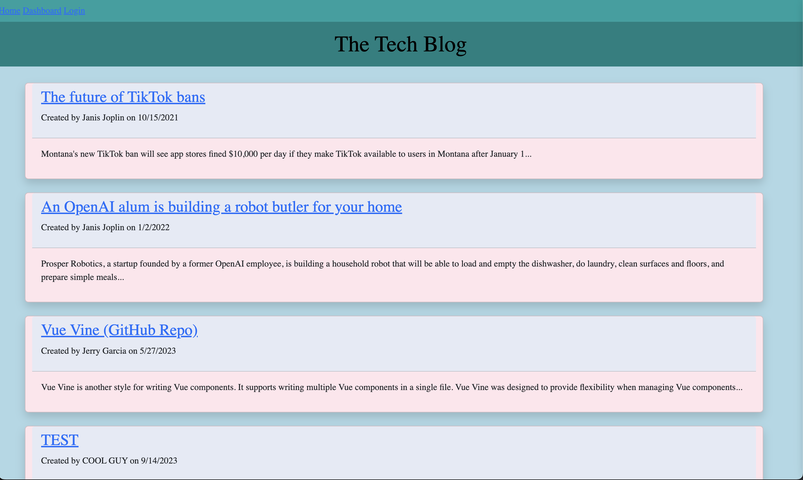
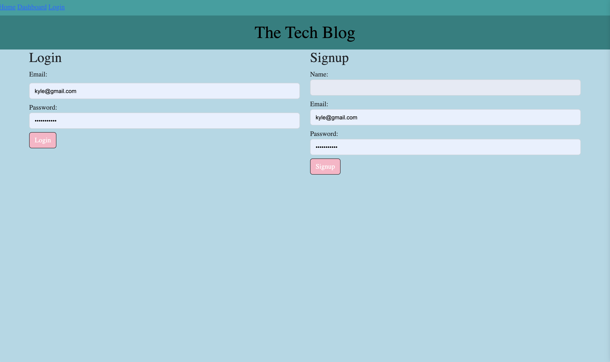

This full-stack application was developed so that users could come create and interact with content regarding the tech industry. The application gives users a space to store created content via the dashboard page, comment on other users posts, as well as edit and delete their own posts. When arriving to the homepage, users will be able to see all current posts without needing an account, however will be directed to login or create an account when trying to access the dashboard, or in trying to create or view specific posts. User authentication via session storage and cookies is utilized in the application and offers a secure profile through specific routing and page protection. Users passwords are hashed through the bcrypt dependency before being entered into the MySQL database giving additional safeguards to users. This project implements a model-view-control (MVC) specific set up, uses the object-relational-mapping (ORM) dependency Sequelize to connect the front-end code (UI) to the database, and Express routing. This project also utilizes handlebars templating engine which allowed data to be passed from the database and appended to the front-end in a DRY and simplified way. Challenges faced when creating this application were the use of the handlebars template engine. This was my first time using one, and it took quite a bit of tinkering to find the best way to give certain partials access to the data I wanted to pass to the page. I also still struggle a bit with routing, and middleware in regards to the syntax used. This was the first full-stack web application I have built, so there was definitely a few times where I felt overwhelmed with the amount of files I was needing to comb through, however I eventually did get the feel for how all the different parts connected resulting in the completed application!

